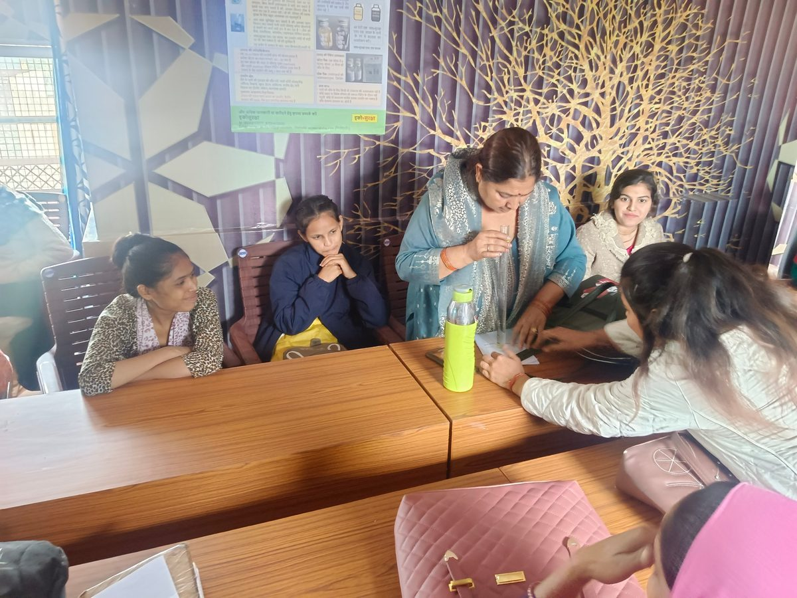
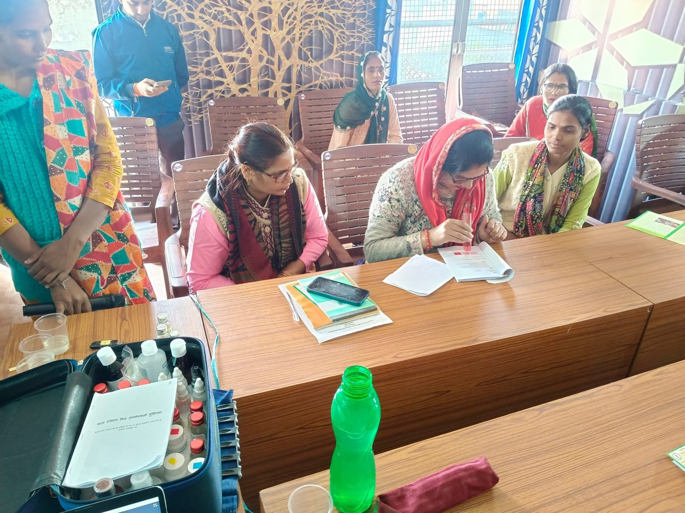
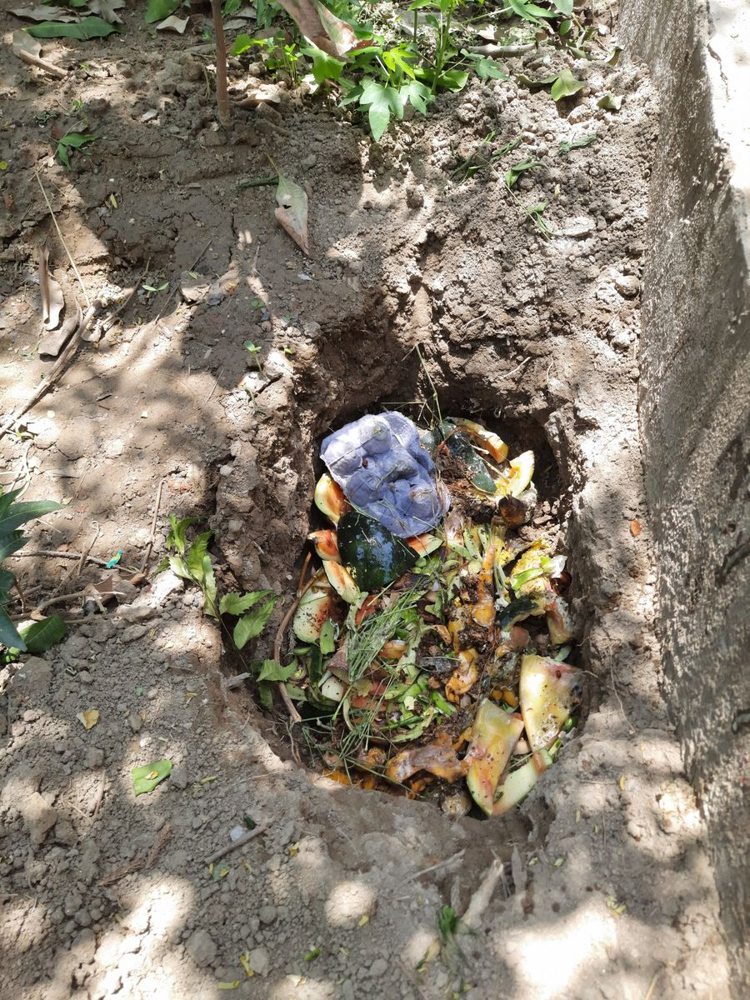

Our Services
EcoSuraksha is more than a product company. We work with communities, schools, NGOs, enterprises and institutions to bring practical environment and health solutions to the people they serve. Here is what we offer, with pictures from our work.
Testing and advisory services
Best for: communities, institutions, enterprises and individuals
We test and advise on water and the wider environment, using our own simple field kits so results are available on the spot, and we explain what the results mean and what to do next.
- On-site checks of chlorine, bacterial contamination and turbidity in water
- Advice on disinfection, filtration and safe storage
- Guidance on setting up routine testing for a school, society or village


Training and capacity building
Best for: NGOs, gram panchayats, community groups, schools and institutions
Practical training that leaves people able to test, understand and act on their own water and environment, from awareness and environmental action to community development. We also develop the training modules themselves.
- Hands-on water-quality testing training
- Training modules designed for your audience and language
- Skills for the people who will carry a project forward




School and community awareness, and surveys
Best for: schools, colleges, NGOs and agencies running community programmes
Clear, simple sessions that explain why safe water matters and how to protect it. We also design and report on KAP (knowledge, attitude and practice) surveys, so you can see what people know and do today and measure the change after your programme.

Exhibitions and event management
Best for: organisations holding events on water, environment, health or sustainability
We plan and run events, exhibitions and demonstrations on these subjects, so visitors can see and try solutions for themselves.

Waste management and recycling
Best for: households, institutions, communities and small enterprises
Service delivery for waste management with recycling, water management and sustainable agriculture, turning what is thrown away into something useful. Waste utilisation is one of our core areas of work.

Product development and customisation
Best for: programmes that need a simple tool that fits their own need
We design, research, assemble and customise simple products for environment and health management, including waste and alternative building materials, aimed at the base-of-pyramid segment. Our water-testing kits are the first of these and can be supplied in bulk or in customised packs for community programmes.
Local solutions and business models
Best for: communities, social enterprises and NGOs facing a local problem
Every place has its own conditions. We help develop a solution package or a business model for small and micro enterprises that suits your local problem, and then test it in the field to prove that it works.
- Sustainable technology solution packages suited to local needs
- Business models for small and micro enterprises
- Technology incubation, validation and packaging at environmental, economic and social scale
Product performance validation and certification
Best for: makers of environment monitoring and management products
If you have developed a technical product for environment monitoring or management, we support you in getting its performance validated and certified by competent agencies, so that customers and partners can trust it.
Project proposals, design and implementation
Best for: grassroots NGOs and institutions
We help you prepare a proposal tailored to your organisation and community, write reports, design the project, and carry it out on the ground.
- Customised proposal and report preparation
- Clear project design
- On-the-ground implementation support
Knowledge and solution partners
Best for: any organisation that needs expertise it does not have in-house
We help you find the right knowledge and solution partners for your project and connect you with them, drawing on our network of subject experts, so you do not have to build every capability yourself.
How to start a conversation
Write or call and tell us three things: what you are working on, where, and what help you are looking for. We will take it from there.